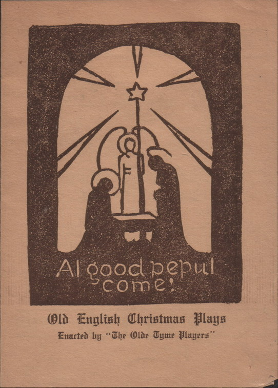
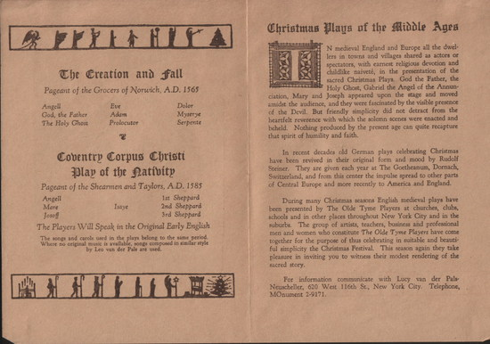
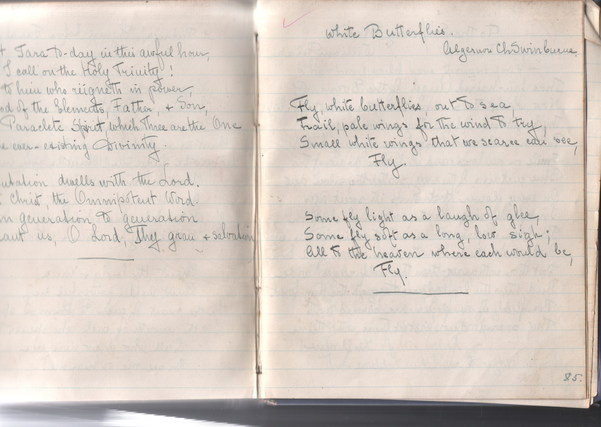

|
Lucy Neuscheller
Lucy Neuscheller (nee Lucy van der Pals), mother of Mechthild, was a eurythmist, actress and teacher.
Al good pepul come! A program of Old English Christmas Plays enacted by The Olde Thyme Players, New York. (date unknown)


Christmas Plays of the Middle Ages (from the above programme)
In medieval England and Europe all the dwellers in towns and villages shared as actors or spectators, with earnest religious devotion and childlike naivete, in the presentation of the sacred Christmas Plays. God the Father, the Holy Ghost, Gabriel the Angel of the Annunciation, Mary and Joseph appeared upon the stage and moved amidst the audience, and they were fascinated by the visible presence of the Devil. But friendly simplicity did not detract from the heartfelt reverence with which the solemn scenes were enacted and beheld. Nothing produced by the present age can quite recapture that spirit of humility and faith.
In recent decades old German plays celebrating Christmas have been revived in their original form and mood by Rudolf Steiner. They are given each year at the Goetheanum, Dornach, Switzerland, and from this center the impulse spread to other parts of Central Europe and more recently to America and England.
During many Christmas seasons English medieval plays have been presented by The Olde Thyme Players at churches, clubs, schools and in other places throughout New York City and in the suburbs. The group of artists, teachers, business and professional men and women who constitute The Olde Thyme Players have come together for the purpose of thus celebrating in suitable and beautiful simplicity the Christmas Festival. This season again they take pleasure inviting you to witness their modest rendering of the sacred story.
For information communicate with Lucy van der Pals-Neuscheller, 620 West 116th St., New York City.
***
POEMS
A selection of poems from the notebooks of Lucy Neuscheller.

page of notebook (extractfrom the James Clarence Mangan translation of St.Patrick's Hymn before Tara and Algernon Swinburne's White Butterflies)
A Salutation to the Dawn
- from the Hindu
Look to the Day
For yesterday is already a dream
And tomorrow is only a vision
But today well lived makes every
Yesterday a dream of happiness
And every tomorrow a vision of hope.
Look well, therefore, to this day,
Such is the Salutation of the Dawn.
Answer
- A.E. (George Russell)
The warmth of life is quenched with bitter frost;
Upon the lonely road a child limps by
Skirting the frozen pools: our way is lost:
Our hearts sink utterly.
But from the snow-patched moorland chill and drear,
Lifting our eyes beyond the spired height,
With white-fire lips apart the dawn breathes clear
Its soundless hymn of light.
Out of the vast the voice of one replies
Whose words are clouds and stars and night and day,
When for the light the anguished spirit cries
Deep in its house of clay.
Had I the Heavens' Embroidered Cloths
- W.B. Yeats (The Wind Among the Reeds, 1899)
Had I the heavens' embroidered cloths,
Enwrought with golden and silver light,
The blue and the dim and the dark cloths
Of night and light and the half-light,
I would spread the cloths under your feet:
But I, being poor, have only my dreams;
I have spread my dreams under your feet;
Tread softly because you tread on my dreams.
I dreamed that it was neither night nor noon
- R.H. Carpenter
I dreamed that it was neither night nor noon
And in the blue and windy place
On one foot the sun
On one foot the moon
And stars like the dust of the road in my face.
from The Book of the Dead
- Egyptian
I am the pure lotus
Springing up in splendour -
Fed by the breath of Ra. -
Rising into sunlight
Out of soil and darkness
I blossom in the field.
Night
- A.E. (Collected poems, 1913)
Heart-hidden from the outer things I rose;
The spirit woke anew in nightly birth
Unto the vastness where forever glows
The star-soul of the earth.
There all alone in primal ecstasy,
Within her depths where revels never tire,
The olden Beauty shines: each thought of me
Is veined through with its fire.
And all my thoughts are throngs of living souls;
They breathe in me, heart unto heart allied;
Their joy undimmed, though when the morning tolls
The planets may divide.
The wind sways the pine
- from the Irish
The wind sways the pine
And below
Not a breath of wild air
Still as the mosses that glow
On the floorings and over the roots here and there
The pine tree drops its dead.
It is silent as under the sea.
Over head! Over head!
Rushes life in a race
As the clouds, the clouds chase
And we go, and we drop
Like the fruits of the tree
Even we, even so.
The Rune of the Peat Fire
- from the Irish, rendering - Kenneth McCleod
The first layer of peat is laid down in the name of the God of life, the second in the name of the God of peace and the third in the name of the God of grace.
The Sacred Tree
To save
To shield
To surround
The hearth
The house
The household
This eve
This night
O this eve
This night
And every night
Each single night
The Rune of Hospitality
- from the Irish, rendering - Kenneth McCleod.
I saw a stranger yesterday;
I put food in the eating place,
Drink in the drinking place;
And in the sacred name of the Trinity,
He blessed myself and my house,
My cattle and my dear ones
And the lark said in her song,
Often, often, often
Goes the Christ in the stranger's guise;
Often, often, often
Goes the Christ in the stranger's guise.
Vision
- Fiona Macleod (William Sharp)
In a fair place
Of whin and grass,
I heard feet pass
Where no one was.
I saw a face
Bloom like a flower -
Nay, as a rainbow shower
In a tempestuous hour.
It was no man nor woman
It was not human:
But beautiful and wild
Terribly undefiled,
I knew an unborn child.
Truth, Life, Eternal
- Albert Steffen
Truth, spake my spirit
And I beheld all transiency.
But the Word endures
And my fate begins.
Life, spake my spirit
And I beheld myself as bones of death.
But the Word endures
And my fate begins.
Eternal, spake my spirit
And I beheld the Christ upon the Cross.
But the Word endures
And my fate begins.
The Valley of White Poppies
- Fiona Macleod
Between the grey pastures and the dark wood
A valley of white poppies is lit by the low moon:
It is the grave of dreams, a holy rood. It is quiet there: no wind doth ever fall.
Long, long ago a wind sang once aheart-sweet rune.
Now the white poppies grow, silent and tall. A white bird floats there like adrifting leaf:
It feeds upon faint sweet hopes and perishing dreams
And the still breath of unremembering grief. And as asilent leaf the white bird passes,
Winnowing the dusk by dim forgetful streams.
I am alone now among the silent grasses.
Poems for ChildrenSilver
- Walter de la Mare
Slowly, silently, now the moon
Walks the night in her silver shoon;
This way, and that, she peers, and sees
Silver fruit upon silver trees;
One by one the casements catch
Her beams beneath the silvery thatch;
Couched in his kennel, like a log,
With paws of silver sleeps the dog;
From their shadowy cote the shite breasts peep
Of doves in a silver-feathered sleep;
A harvest mouse goes scampering by,
With silver claws, and silver eye;
And moveless fish in the water gleam,
By silver reeds in a silver stream.
What Became of Them?
- Anon
He was a rat and she was a rat
And down in one hole they did dwell
And both were as black as a witch's cat
And they loved one another well.
He had a tail and she had a tail
Both long and curly and fine.
And each said: 'Yours is the finest tail
In the world excepting mine.
He smelt the cheese and she smelt the cheese
And they both pronounced it good
And both remarked it would greatly add
To the charm of their daily food.
So he ventured out and she ventured out
And I saw them go with pain
But what befell them I never can tell
For they never came back again.
Snow-Flake
- Mary Dodge
Whenever a snow-flake leaves the sky
It turns and turns to say: 'Goodbye!
Goodbye dear cloud, so cool and grey!
Then lightly travels on its way.
And when a snow-flake finds a tree,
'Good day!' it says 'Good day to thee!
Thou art so bare and lovely, dear,
I'll rest and call my comrades here.'
But when a snow-flake, brave and meek,
Lights upon a rosy maiden's cheek,
It starts - 'How warm and soft the day!
Tis summer!' - and it melts away.
|
|